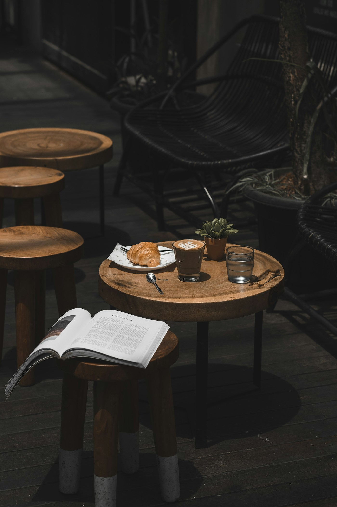

01 / BRUNCHHOUSE FAVOURITE
The Island Breakfast
Two eggs, toasted sourdough, pol sambol, grilled tomato, and a little island warmth.
LKR 1,850Contains egg · gluten
YOUR SLOW CORNER OF COLOMBO
Island-inspired plates, freshly brewed favourites, and a place to make yourself at home. Stay for a cup. Linger a little longer.
A good day starts here.Breakfast, brunch & the in-between.

01 — OUR STORY
Imagine a leafy corner of Colombo, the smell of fresh coffee, and something delicious making its way to your table. That’s the feeling behind Ceylon & Crumb.
Our café concept brings Sri Lankan flavours to everyday favourites: a little coconut, a hint of spice, and plenty of comfort. A spot for catching up, taking a breath, and making an ordinary morning feel special.
03 — AROUND THE TABLE
Sample testimonials
Written for this fictional café.
“The kind of place you visit for a quick coffee and end up staying for the whole morning.”
“That coconut latte and a plate of French toast? My idea of a perfect slow Sunday.”
“Warm, welcoming, and full of little details. A lovely spot to catch up with friends.”
04 — SAVE YOURSELF A SEAT
Good conversations start around a table.
Drop by for brunch or send us a little hello.
Demo mode: no bookings or messages are sent.